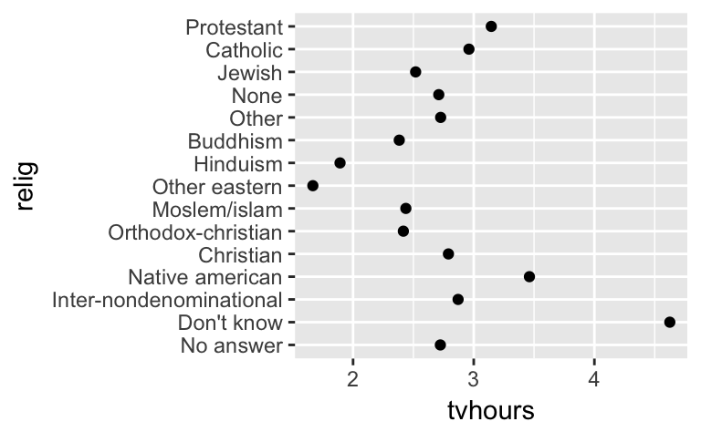
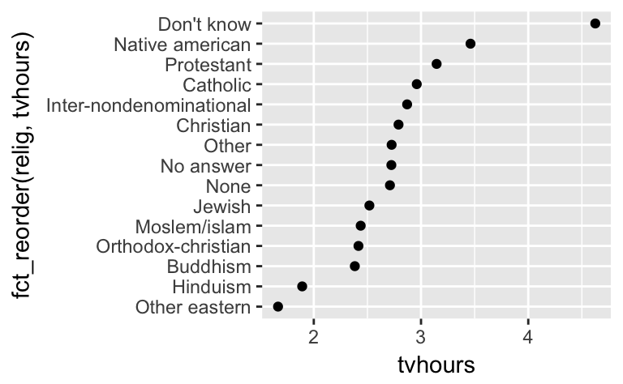
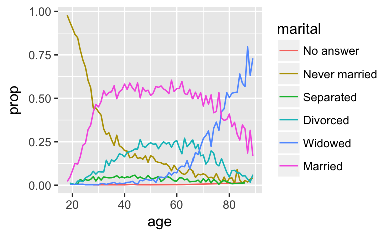
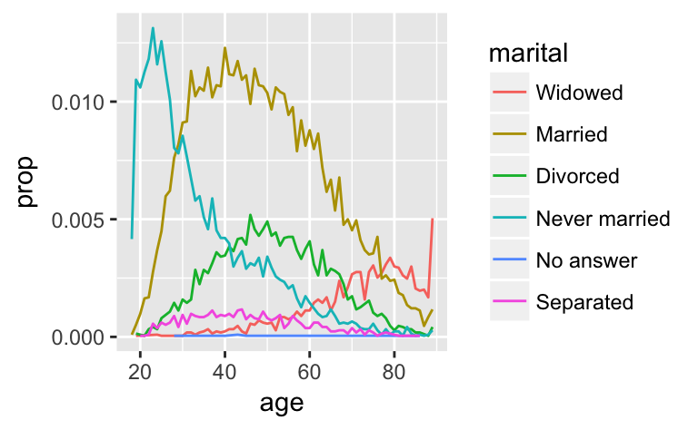

I’m excited to announce forcats, a new package for categorical variables, or factors. Factors have a bad rap in R because they often turn up when you don’t want them. That’s because historically, factors were more convenient than character vectors, as discussed in stringsAsFactors: An unauthorized biography by Roger Peng, and stringsAsFactors = <sigh> by Thomas Lumley.
If you use packages from the tidyverse (like tibble and readr) you don’t need to worry about getting factors when you don’t want them. But factors are a useful data structure in their own right, particularly for modelling and visualisation, because they allow you to control the order of the levels. Working with factors in base R can be a little frustrating because of a handful of missing tools. The goal of forcats is to fill in those missing pieces so you can access the power of factors with a minimum of pain.
Install forcats with:
install.packages("forcats")forcats provides two main types of tools to change either the values or the order of the levels. I’ll call out some of the most important functions below, using using the included gss_cat dataset which contains a selection of categorical variables from the General Social Survey.
library(dplyr)
library(ggplot2)
library(forcats)
gss_cat
#> # A tibble: 21,483 x 9
#> year marital age race rincome partyid relig denom tvhours
#> <int> <fct> <int> <fct> <fct> <fct> <fct> <fct> <int>
#> 1 2000 Never married 26 White $8000 t… Ind,near… Prote… South… 12
#> 2 2000 Divorced 48 White $8000 t… Not str … Prote… Bapti… NA
#> 3 2000 Widowed 67 White Not app… Independ… Prote… No de… 2
#> 4 2000 Never married 39 White Not app… Ind,near… Ortho… Not a… 4
#> 5 2000 Divorced 25 White Not app… Not str … None Not a… 1
#> 6 2000 Married 25 White $20000 … Strong d… Prote… South… NA
#> # ... with 2.148e+04 more rowsYou can recode specified factor levels with fct_recode():
#> # A tibble: 10 x 2
#> partyid n
#> <fct> <int>
#> 1 No answer 154
#> 2 Don't know 1
#> 3 Other party 393
#> 4 Strong republican 2314
#> 5 Not str republican 3032
#> 6 Ind,near rep 1791
#> # ... with 4 more rows
gss_cat %>%
"Republican, strong" = "Strong republican",
"Republican, weak" = "Not str republican",
"Independent, near rep" = "Ind,near rep",
"Independent, near dem" = "Ind,near dem",
"Democrat, weak" = "Not str democrat",
"Democrat, strong" = "Strong democrat"
)) %>%
count(partyid)
#> # A tibble: 10 x 2
#> partyid n
#> <fct> <int>
#> 1 No answer 154
#> 2 Don't know 1
#> 3 Other party 393
#> 4 Republican, strong 2314
#> 5 Republican, weak 3032
#> 6 Independent, near rep 1791
#> # ... with 4 more rowsNote that unmentioned levels are left as is, and the order of the levels is preserved.
fct_lump() allows you to lump the rarest (or most common) levels in to a new “other” level. The default behaviour is to collapse the smallest levels in to other, ensuring that it’s still the smallest level. For the religion variable that tells us that Protestants out number all other religions, which is interesting, but we probably want more level.
gss_cat %>%
count(relig)
#> # A tibble: 2 x 2
#> relig n
#> <fct> <int>
#> 1 Protestant 10846
#> 2 Other 10637Alternatively you can supply a number of levels to keep, n, or minimum proportion for inclusion, prop. If you use negative values, fct_lump() will change direction, and combine the most common values while preserving the rarest.
gss_cat %>%
count(relig)
#> # A tibble: 6 x 2
#> relig n
#> <fct> <int>
#> 1 Christian 689
#> 2 None 3523
#> 3 Jewish 388
#> 4 Catholic 5124
#> 5 Protestant 10846
#> 6 Other 913
gss_cat %>%
count(relig)
#> # A tibble: 12 x 2
#> relig n
#> <fct> <int>
#> 1 No answer 93
#> 2 Don't know 15
#> 3 Inter-nondenominational 109
#> 4 Native american 23
#> 5 Christian 689
#> 6 Orthodox-christian 95
#> # ... with 6 more rowsThere are four simple helpers for common operations:
fct_relevel() is similar to stats::relevel() but allows you to move any number of levels to the front.
fct_inorder() orders according to the first appearance of each level.
fct_infreq() orders from most common to rarest.
fct_reorder() and fct_reorder2() are useful for visualisations. fct_reorder() reorders the factor levels by another variable. This is useful when you map a categorical variable to position, as shown in the following example which shows the average number of hours spent watching television across religions.
relig <- gss_cat %>%
age = mean(age, na.rm = TRUE),
tvhours = mean(tvhours, na.rm = TRUE),
n = n()
)

fct_reorder2() extends the same idea to plots where a factor is mapped to another aesthetic, like colour. The defaults are designed to make legends easier to read for line plots, as shown in the following example looking at marital status by age.
by_age <- gss_cat %>%

You can learn more about forcats in R for data science, and on the forcats website.
Please let me know if you have other problems with factors that forcats doesn’t help with!